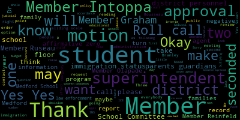
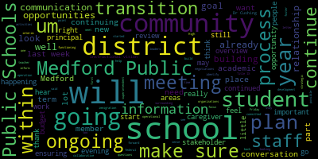
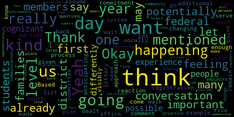

AI-generated transcript of Regular MSC Meeting - 1.27.2025
English | español | português | 中国人 | kreyol ayisyen | tiếng việt | ខ្មែរ | русский | عربي | 한국인
Back to all transcripts
[Lungo-Koehn]: Are we recording, Cat? Thank you. We have our consent agenda, approval of bills and payrolls, approval of capital purchases, approval of donations. B.S. Anafi, Pharmaceuticals of Framingham, Biological Safety Cabinet to the CTE Biotechnology Program, approval of grants, Massachusetts Cultural Council, $5,000, state grant for proficiency-based outcomes in languages other than English, 10,000, approval of field trips, approval of meeting minutes, regular meeting January 13th, 2025. Is there a motion for approval of the consent agenda? I remember all party seconded by member and top up. Roll call, please. Sorry. Forgive me. Oh, you're right. Yeah. Remember Graham's online. So do a roll call.
[Ruseau]: Um, member Branley. Remember Graham?
[Lungo-Koehn]: Yes.
[Ruseau]: Remember in Tapa? Remember all a party? Yes. Remember? Reinfeld? Remember? So yes, Mayor Lunker.
[Lungo-Koehn]: Yes. 70 affirmative zero negative. The consent agenda is approved. We do not have any reports of subcommittees. We have two reports under the reports of the superintendent. Interim superintendent's transition plan. I'm going to turn it over to Dr. Suzanne B. Galussi, our interim superintendent.
[Galusi]: All right, thank you. Good evening, everybody. It's with great enthusiasm and a deep sense of responsibility that I sit in this seat as the new interim superintendent for Medford Public Schools. Having grown up in Medford and worked in the district for about 28 years, I'm really truly honored to have this responsibility to give back to a community that has shaped me so much. I will dive deeper into my transition plans as it relates to this interim role in just a few minutes. But I would like to start with the district's response shared with the Medford Public Schools community last Friday to the recent federal executive order surrounding federal immigration and Title IX. So we understand that our students, which are the true heartbeat of Medford Public Schools, could be feeling a wide range of emotions and some trepidation over these executive orders. The language and the rhetoric that the students and families hear from the news may heighten the stress in our school communities and in our greater community. Our staff members and our district leaders have always and will continue to foster a sense of belonging in our schools that celebrates each student's individuality, their diverse backgrounds, and their many talents. Their diverse and unique perspectives enhance the climate of our schools and fostering that connection and inclusion are core principles for our schools and relate directly to our instructional vision. Medford Public Schools is committed to educating all students in inclusive learning environments because we want our students to feel heard. We want them to feel safe. We want them to feel valued and welcomed and appreciated. So while there's been no enforcement activities on school grounds or any requests for information, it's important that the district's current policies are still in place surrounding federal immigration, Title IX. and LGBTQIA plus students. And some of those just, they were reflected in my memo, but I'm going to also make sure that they're clarified here, that the district is committing, is committed to serving all students whose principal Doss Mile is Medford public, is Medford, excuse me. We do not request any immigration information as part of the registration process, nor will we. Students are dismissed only to the approved consent from their caregiver as to the people that can pick them up from school. We follow all regulations for FERPA and district policy in relation to the student information that we have is strictly we strictly follow FERPA regulations which means we're not giving out information especially without parent consent written within that statute. And our Title IX policies, as we most recently updated, reflective to the 2024, they have not changed. And so those will remain and stay in place. All of our NPS staff members received communication about this last week and our building principals are receiving communication and guidance on an ongoing basis so that they can make sure that their staff is well informed and has a sense of they understand what the communication protocol is moving forward. We recognize that this subject is constantly evolving, and so there'll be additional items on tonight's agenda surrounding this important topic. However, the well-being of our students is paramount to the functioning of Medford Public Schools, and we are committed to protecting the rights and the safety of all of our students. So for tonight, I'm going to talk a little bit about the transition plan. Thank you. Dr. Cushing, you can go to the third page. This second page is the letter that I has sent out to the MPS community. I will make sure that this plan, after being discussed this evening, goes on our website. So if people would like to be able to access it or view it, it will be on our Medford Public Schools website. That will be the letter again, if people maybe just didn't get it in email form last week. So the purpose of this entry plan and transitional plan is just to inform the community about my thinking and some of the activities that will be in place to help guide the transition to try to make it as stable and continuous as possible. So the purpose is to ensure a thoughtful transition from the current superintendent to the interim superintendent. to provide an outline for and convey information related to mid-year transition, ensuring consistency and stability, and to inform the school community about transitional activities to continue building relationships. So there is a theory of action. Which is to just have a, the goal for me in this is to just have a structured and thoughtful process, so that if we, if I'm emphasizing the importance of nurturing those ongoing relationships that I've already kind of started to build but will continue and still grow with stakeholders within the school department as well as within the community and capitalizing on the strengths and opportunities within that community, then the possible disruptions to any sort of education will be effectively minimized. That's the goal is to make this as seamless as possible for our community, for our students and for our staff. So I'm going to draw upon my professional institutional knowledge along with the established community connections that I have to build a strong foundation and create to support a smooth and successful leadership transition. with that being said, there are some key areas that I am going to focus on within this transition. So first, as mentioned, is to continue building those relationships within the community and continue stakeholder communication. Also for operational overview, Yeah, Dr. Cushing, just leave it right there for one second, because I'm just going to go through them and then. The fiscal year 26 budget, ongoing contract negotiations within the district, the ongoing MSBA process for a new Medford High School, and then our plans to begin and launch for the 25-26 school year. So I'm going to briefly talk an overview of all of those areas. So the first one is the Continued Relationship Development and Stakeholder Communication, which will foster collaborative, trusting, and transparent relationships with all stakeholders, ensuring responsiveness to the needs of the Medford Public Schools community. And so with that being said, some of those action items within that would be the welcome letters, which were sent to caregivers as well as staff last week. Some meet and greet opportunities for caregivers as well as for staff. So for the staff opportunities, I'm going to each of the schools and offering an opportunity to come and meet and for me to listen and hear some feedback, hear any questions or concerns, or just for an opportunity to touch base, that will be a dismissal time. I started last week and I'm continuing until I've gone to every school. For the caregivers, I'm finalizing the schedule right now in collaboration with some of the principals. So I am going to offer two opportunities for school communities. One at arrival in person in the morning to capture for some families, mornings are more accessible to them and for some it's evenings. I will also offer an evening opportunity via Zoom for each school community. that will allow for hopefully that continued rapport and relationship building and where I can really have a conversation with each school community and hear input from them. As you may have saw last week, we've gotten lots of feedback about how people really feel that weekly communication is a critical instrument for them to stay connected to the schools, learn what's going on in the district. So continuing that Friday memo was of importance for the community. So it might just be a little rebranded, but that will stay in place and still go out every Friday afternoon so that you can keep up to date with what's happening around the district. Um, and then also is an opportunity for me to branch off to other, um, positions and organizations within the district that I want to have, um, personal. Meetings with, um, those may be on the city side in terms of our, um, city department leaders. They're on the school side in terms of our administration and school leaders. Um, and they're also very critical school organizations. Um, such as CPAC and LPAC, that I want to make sure that I have a meeting with those important organizations. The operational overview is to enhance understanding of district operations, collaboratively identify key priorities, and foster a culture of trust, transparency, and efficiency. And so I'm going to be holding lots of regular meetings to identify short and long-term priorities. So the first bullet is that continued and ongoing focus and overview of academics, which is the position that I was in. And so for the duration of this year, there will be a lot of oversight still on my part. to make sure that the academic gains and the systems and structures we have in place are going to continue. So that won't change. And then because I have spent my world, my time in the academic world, I do have to make sure that I am having those standing meetings with areas such as finance, facilities, IT, athletics and community schools. And so that's gonna broaden my understanding of those areas and make sure that ongoing compliance is happening and that I can identify opportunities for improvement. So the fiscal year 26 budget, I will help to lead the budget process with a focus on timeliness and strategic investment, ensuring it aligns with the needs of Medford Public Schools community while supporting the core values as referenced in our instructional vision. So that also will be regular meetings that I have already set up with the finance team so that I can discuss everything related to all budgetary matters and then ensure adherence to transparent and collaborative budget development process. The other piece would be contract negotiations. So engage in negotiations with bargaining units to build collaborative relationships, address the interests and concerns of varied employees within the district, and improve district operations and outcomes. So we have lots of bargaining units in this district, and several of which we will be engaging with or are continuing to engage with throughout this year. That would be the teachers, the administrators, maintenance, paraprofessionals, food service, and nurses. So that is a significant amount of work that will be happening and continuing to happen this year. Along that thread is also the ongoing MSBA, so the Massachusetts School Building Authority process that we engaged in for Medford High School. So I was on that board previously. My role clearly will shift, but participating in that process to explore funding opportunities and develop a strategic plan. for building a new Medford High School that meets the needs of our students and the community. So that will continue and I know that our meetings will kick up in the next month or two. And then finally is to plan for the school year 25-26. So The goal is to take all of this data that I will be gathering in all of these meetings that I will be having to help inform the plans for 25, 26 school year. And so some of those just, this is not limited to, but some of those things that are on the forefront for me would be extended learning opportunities for the summer. as well as the academic programming for the summer, filling personnel vacancies and looking hard at staffing needs across the district, ensuring that our academic goals are continued and our instructional vision is fully aligned with all that we do in Medford Public Schools. Our strategic plan is outdated, so looking at what that will look like, transitioning that to align with our instructional vision that we created is also going to be part of the work. Identifying operational goals as a result of the meetings, so what will be important for us in terms of making shifts or adding some additional processes. A review of internal systems and structures for how we're operating and functioning. and see if there are ways that we can be operating better and more efficiently. And then a review of district enrollment and school assignment procedures that reflect our most immediate challenges. And so that will be an ongoing review process that I know will most definitely look at the Roberts Elementary School, which is overcrowded and we need to be looking at what that looks like in operation and how we can work to alleviate some of that moving forward, as well as our middle school lottery process. Those are two that are at the forefront, but others may emerge from some of this work that I'm going to be doing across the district. Additionally, just last few would be our professional development planning, our administrative retreat that we have to start the school year, the convocation or the opening that we have with teachers to really set the vision and the goal for next year so that we start on a successful note, and also what our new teacher induction planning looks like. So those are just a few things. I'm happy to take any questions if anyone has any questions for me, but thank you for the time for me to review my thinking in this transition.
[Lungo-Koehn]: Thank you so much, Dr. Galussi, for the well thought out transition plan. I know we did receive this a few days ago, so I'm sure everybody got a chance to review it. If there's any questions from the floor, if not, I'm going to move on to Number two, which is summer fun program. Invite Dr. Peter Cushing, assistant superintendent up.
[Cushing]: Sorry, the red still confused me. Good evening, Madam Mayor, members of the school committee. Thanks for hearing me out today on our rate card presentation, specifically tailored to summer fun. Also on the call this evening is the director of the program, Anthony Petrellis. For those in the community who aren't aware, Summer Fun is a six-week camp run by the Medford Public Schools that runs daily from 7.30 a.m. to 4.30 p.m. and it starts basically the week of July 4th and runs six weeks from that point forward. The program, starting last year, now provides free meals to students under the Medford Public Schools School Nutrition Program. The program has been held at the Mississippi, I believe, for the past three or four years since we moved from Medford High School, and they also utilize the Tufts pool for part of their daily swimming activities. The program operates with a director and two assistant directors and operates for five days a week, with the exception of the July 4th week. Currently, the camp is charging $200 per week. In comparison to other programs, those are north of $500 for similarly situated programs. The director has recently started a three-day program for Councilor and training for middle school students at a rate of $75 per week. And the district, we're proposing a rate increase for this summer. I'm interested to hear feedback from the committee on that. Increasing to $275 per week for residents and Medford employees. The rate has not been increased for at least six years based on our research And prior to that, the rate was $175. We're also proposing a rate for non-Medford residents of $300. The CIT rate is not proposed to increase as a part of this. And the district is interested, as I said, in your feedback. This is part of the rate card because we're trying to make sure that everything that district charges a fee for comes before the committee as it should and is codified and easily available and easy to understand rate card for the city. So thank you. And.
[Lungo-Koehn]: Thank you, Dr. Cushing. Member Ruseau.
[Ruseau]: I appreciate the focus on having us approve all the things you're supposed to approve. How many people who are not residents and not employees actually use this program?
[Cushing]: When I spoke to Mr. Petrales, who's on the call, if I remember correctly, and feel free to correct me, it was about 10. OK.
[Ruseau]: Out of how many? I'm sorry, but it's in the report.
[Cushing]: Mr. Petrales, can you give me, I think it was 120 was the max per week last year, but Anthony, would you be able to add that? I'm pretty sure I made him a co-host, but let me just close up.
[Anthony Petrelis]: Hello?
[Unidentified]: Oh, there he is.
[Anthony Petrelis]: Oh, there we are. I can't do video. It won't let me do video. But if you guys can hear me, that's totally fine. Sorry, what was the question again?
[Ruseau]: How many participants are there and how many of them are people who are not residents or employees who pay the higher rate?
[Anthony Petrelis]: Sure, so it really depends. I mean, I feel like from some of the summer that's different. I mean, I said at the Dr. Cushman when we met before, I mean, last summer there was no more than 10 kids that were out of district. And most of the kids that were out of district might've been parents who worked within the city of Medford that reached out to us. We did require physical just to kind of make sure that, you know, from our end, we did our homework to make sure if there was any accommodations that we might need to make for our camp, we did. Um, but those numbers are really low and just, they fluctuate from year to year, but I would say no more than 10 kids per summer that we have that are out of district.
[Ruseau]: Thank you.
[Anthony Petrelis]: Yeah.
[Lungo-Koehn]: Member Branley.
[Branley]: With this increase, I'm just curious, does the increase in tuition increase the director or the assistant director of pay?
[Cushing]: That's one of the things that we have to discuss. That pay has remained static since 2014 for the director. And prior to that, it was static for six years. I believe there was an increase in 2008, another increase, or I shouldn't say there was an increase. Mr. Petrella started in 2008. There was an increase in 2014. He sent me the data today. I looked at it quickly and there has been no increase in the past 10 or 11 summers.
[Branley]: Wow. So my question, does the increase in tuition, would the money come out of that?
[Cushing]: Yes, this is a self-funding program. We'd also like to make sure that right now, Mr. Petrellis let me know that the program basically starts with a zero balance. So what we'd like to do is we'd like to start making sure that he has the ability to pre-purchase items and make sure the camp has everything it needs to. And it should be able to self-sustain itself as it has done in the past.
[Branley]: Do we usually make a profit?
[Anthony Petrelis]: Yeah, if I could chime in. Yeah, so last year we made about a $25,000 profit. I mean, give or take a little bit here or there, but that's about the rough number. I know we mentioned earlier about the price increase. The one thing I'd say is I think it's really important just to kind of put in the perspective that we do offer as a school district a really good camp at a really reasonable, cheaper price than most places, but it's sustained almost 20 years. I've been the director of it at 18. It's one of those things that I think it's we're really lucky to be able to provide a place that people can afford. And to me, you know, I know we mentioned 75 and I mean, majority of these people on here are my bosses. So I'm not telling anybody what to do on this call. But, you know, to me, I just felt like maybe 50 will be a little bit more reasonable, I think, especially maybe for parents that, you know, just had their taxes raised as well to kind of hit them with, you know, a decent size increase on a camp that's been really affordable for a long time, I think. Is a tough ask a little bit just knowing the camp and being a part of it for so long, but it did make a profit last year, and some years, you know, some years and made a bigger profits and others it also depends on enrollment and over the years method recreations come into town and. coaches have clinics and camps and you have power kids and six acres. And so there's a lot of competition maybe than there was five or six years ago, uh, when we were just maybe the only pony in town a little bit. So I just want you guys to kind of keep that in mind also in like the bigger picture of things.
[Branley]: Thank you. Um, do we ensure that Medford public school students are accepted first? I know there's only 10 per se. I just want to make sure that, that we're,
[Anthony Petrelis]: I never turn anybody away, honestly, I've never turned anyone away.
[Branley]: Okay, no, that's fine. And then how much of the profit goes back into the program? I mean, I know you said he starts with zero, but like, does some of that profit go back to him to say, okay, you have a like a budget? Do you have a budget?
[Cushing]: That's one of the things that we're looking to make sure that's that has not been really done in the past. It's part of the community schools program. So anything he needs, but as far as compartmentalizing, that's something that we want to make sure that we're looking at.
[Branley]: And then just for Mr. Petrales, do you feel like you are staffed properly with 120 kids?
[Anthony Petrelis]: I mean, if I could have like a million councils, that'd be great. But I mean, right now, I think where we're at in the current staffing that we have yet, you know, I'm always careful with numbers, and I'm always careful with the finances and stuff and not overstaffing too much. I think the one thing for us that makes us like unique is that we also accept a lot of walk-ins day of families that have last minute emergencies or weren't able to get in somewhere else and we do provide that so keeping um you know maybe hiring a little bit extra sometimes anticipating you know the average of 10 to 15 walk-ins per week that you're not expecting um you know we try to be smart and and aware of what we're doing.
[Branley]: Does do the people that we're hiring does that um does that expense come out of the profit?
[Cushing]: Yes. I mean, so last year we brought in about $120,000. Our expenses in the neighborhood of $100,000 were largely personnel related. OK, perfect.
[Lungo-Koehn]: Okay great. Those are my questions. Thank you. Thanks for doing this. Thank you, Member Granley. Just to, if I may, from the Chair, and then I'm going to turn it to Member Graham. I just don't want, I want to point out something Mr. Petrellis mentioned, that this is an affordable camp that people of all different economic backgrounds use, including many that can't afford six acres and being one that started the program myself and former school committee member in recoup know that was the whole premise and that's the whole reason why we wanted to bring camp into Medford to blow six acres out of, you know, away as far as how much it costs. kids who can't afford six acres have that opportunity. So I would just make a suggestion if, I know we can't make amendments on the floor, but just to people to think about maybe spreading that $75 increase out over two years, just to make it a little bit more digestible for families, like Mr. Petrella said, that are struggling to get by. I know my son loves this program, and if it was a sliding scale, then I should be paying more than a lot of people that I know attend this program that really can't afford it. So I just want to point that out. I'm going to turn it to Member Graham, then I'll turn it to Member Reinfeld.
[Graham]: Thank you, I just had a couple of questions 1st, the flyer that's on the back of the packet that we received shows like a 6 week run and it looks like the 1st week. Sort of this is from 2023, so it looks like the 1st week is roughly like. the week of 4th of July for a partial week. And then it does end pretty abruptly in mid-August. So can you tell us what the plans are for this year's dates?
[Anthony Petrelis]: Yeah, so right now we're scheduled from June 30th, which is the Monday with having the 4th off. And then I believe the Friday is either August 8th or August 9th. I can just pull up on my calendar here.
[Graham]: The 8th is a Friday. Yeah, so the 8th. Okay, so if I am thinking about, I know it's hard to figure out where school really ends, but. That means there is the 1 week gap between. Maybe roughly a 1 week gap before the camp gets going and then there's actually. um a two plus week gap in august um have we ever explored particularly covering those late weeks in august like that is a time when people really struggle for camps because camps wrap early so have we ever considered that those weeks just want me to take that dr cushing or
[Cushing]: Well, and I mean, I actually broached this subject with Mr. Petrelis the other day, but there is another operational challenge is the Missittuck is a very utilized school over the summer. We also have an EL camp. We have some of our summer special education programs there. And so those two weeks are really critical, particularly at the Missittuck to try to get that building back into an operational readiness for academics come the start of school. I also spoke with Mr. Petrellis about seeing if there was a way to extend on the front or on the backside. And it does come an issue around staffing with students going back to college. Mr. Petrellis himself, his assistant directors may also want a week here or there. as he's an educator. So it is something that Memogram that we'd really like to consider. It's just trying to thread that needle and nuance. I would say that given that two of our buildings will be offline this summer, the McGlynn and the Andrews for the HVAC work, that it should be something we explore not for this summer, but possibly the summer of 2026.
[Graham]: Thank you for that. I was not thinking about the Andrews and the McGlynn being Consumed, but I would like us to explore that for next year because I think particularly those late weeks are a problem. I also would like to see a budget proposal for this year. So that we can understand, like, I am all for. the affordability of this camp but I would like to see a budget that says here's you know here's how many students we expect to have based on some set of assumptions which usually could lean on past performance here's what we anticipate the costs of the staffing that we need for that number of students to be and yes, all of this works out and we're not operating in the red or in the black. I would also love to explore a sliding scale tuition program, much like we do with the after school program, because our students have parents with wide varieties of an ability to pay for camp. And there are lots of kids who really love this camp, which is amazing. And I think we should be leaning more towards what we're doing with after school than setting sort of a blanket price. And with after school, we look at some thresholds of financial assistance. And I would love to see an analysis that says if the rate is this, we can We can do we can do some sort of sliding scale that reduces the rate and makes it even more affordable for those families who need it. And I know that's a big ask, but I, I would like to see us do that and think about what is reasonable for us to do this year. You know, Anthony, your point about people having experienced a tax increase is well taken and that's important money. There's important work that will come from that. But I would like us not to impose the same kind of increase across the board if we can avoid that. So I'm hoping that we could do that for maybe the next meeting. Is that possible? Do you need me to make a motion?
[Anthony Petrelis]: Is that for me? I'm sorry.
[Graham]: Is that for Dr. Cushing and for you? I'm assuming the finance office is going to need to be involved in that as well.
[Anthony Petrelis]: Yeah. I mean, for me, I like, honestly, a lot of the finances when things get added up and so on, I'm not usually a part of it, you know, but I definitely can be in the process. Like I definitely want to be involved with it. So that's not me trying to run away from it. I just wouldn't even know where to begin, honestly, to like help out with that.
[Graham]: Of course, and I think, I would think, Anthony, that the finance office would need your input on the assumptions, right? Like what is the enrollment, like the date, that kind of data, like the supplies that you need, that kind of thing. But the finance office should be able to put that analysis together and be able to show us what's possible and whether doing some sort of sliding scale model off based on what we do with afterschool would be possible this year or not. Dr. Cushing, is that feasible for our next meeting?
[Cushing]: It could be. I'm not saying that it wouldn't be. One of the things we were hoping was to at least increase the rate a certain amount so that we could open registration. So one of the things, Summer Fund typically opens several weeks after other camps do. So looking for the future, I'm not saying that what a two week delay might do, but looking for the future, I wanna really make sure that We are providing this opportunity, having three kids now, I can say the summer camp race is literally a race. And getting shut out is something I recently experienced for a week so I'm still trying to figure that one out. But the reason why I mentioned that is. I wanna make sure that our option is available essentially on January 1st when these other camps open moving forward. We're obviously behind that. So I don't have a problem working with our finance team. I apologize. And working with Mr. Petrellis on this and so that we have a clearer sense of our finances, the personnel costs. This is largely personnel costs. We really don't take into consideration things like the electrical use on the building, which is the primary for the summertime. Um, we don't take into consideration various things along those lines. Uh, we do take into consideration, you know, additional custodial cleaning fees. Uh, there's a daily two hour, um, overtime that's connected with this. So it can be cleaned after the fact based on how the summer shifts go. Um, so, uh, I can definitely do that, but we were looking to try to open registration this week. Um, and if a reduced rate and a sliding scale is something that people would like to see for the following summer, I fully respect and support that. I also don't want the committee to feel rushed by any stretch of the imagination.
[Graham]: But, yeah, I mean, to your point, we should be reviewing this probably in the fall every year so that. We can be 1 of the 1st options out of the gate. Um, and, um, I think it's. may be reasonable for us right now to advertise what the dates will be. And that registration is forthcoming once the rates are agreed to. So I feel like if people know it's an option and that that's forthcoming, that's not going to change the game for people too much at this point. Because all of those camps we're talking about, they're already out. So I don't think. I think two weeks for a better pricing, for a better picture of pricing so that we're not charging too much or too little might make sense. And then my final question is this form, which was from 2023, says that you need to send checks and money orders to Medford Community Schools with this paper form. Have we migrated this registration process to an online platform?
[Cushing]: We're in the process of doing that myself. And Mr. Pivicelli, our communications director, have been meeting with Final Sight on that for this and many other options so that parents don't have to stand in line. One of the drivers for online payments through Final Sight is a program called BlueSnap. And BlueSnap is then where the money gets deposited. And from my understanding, I need to connect with the city hall finance team just to really make sure that where where funds go and how they're accessed. So, that's just one of the things that's next on my plate to work on but making sure that we have credit card registration, online payments, or bank transfers, however it is, is really a critical thing for the district as we do these camps and other other things that come up for families because check and money order is not how things operate in 2025.
[Graham]: So is it the plan that that will be available for this registration period or are you saying this will it will not be available for this registration period?
[Cushing]: We're working on that for this registration period.
[Graham]: Got it. Okay I appreciate that and I know it's a lot of work but I think everyone will appreciate it once we need to sort it out.
[Anthony Petrelis]: I'll be honest with you, that's like music to my ears because it is really stressful. I'm dealing with a lot of checking cash and I feel like I'm running to the high school nonstop. I don't want to hold on to anything. That would be unbelievable, honestly.
[Graham]: Yeah. I don't think we want our staff responsible for like sort of large swaths of cash because there's all kinds of like cash control questions that come into play when those processes are in place. So if we can make that happen, that would be great. I would like to make a motion to get an updated rate card and a program budget at the next meeting to specifically explore sliding scale of rates. And hopefully my colleagues will weigh in and let me know what they think about that.
[Lungo-Koehn]: Thank you. And point of information, I think we do have a little time. I mean, as one who registers, Mr. Petrella, correct me if I'm wrong, but I don't think application process usually opens till beginning of June, if I have that correct.
[Anthony Petrelis]: Yeah, I mean, the last couple of years I've been wanting to put it out because the issue is have is that we get a lot of at the end of the summer. Man, we wish we knew about this place earlier. We would have registered all summer long. So that's something over the last couple of years I've been really trying to make an effort to change and get it out much earlier than we have been. But in the past, yeah, it's been usually around like March, April, much later than most places.
[Lungo-Koehn]: OK, so motions on the floor before we call a motion. Member Reinfeld.
[Reinfeld]: I was also going to ask about financial aid or sliding scale. So I support that as seeing that model. And I would actually like to see more of a differential between the resident and Medford school staff rate. And non-residents, the rec center program is 250, Power Kids is 315, and then I believe Six Acres is 850 for two weeks, which turns into 425 for one week. And so looking at our numbers here, I think particularly for non-residents, we can definitely push that up. when we want to be prioritizing the people in Medford and Medford schools.
[Cushing]: If I may, we really were not trying to shock the system here. We were trying to realize this has been static for a long time. While there is a $20,000 delta of profit, if you consider increasing the directors' pay, maybe the assistant directors, throwing some of the things in, that $20,000 can evaporate very quickly. So that's, that was really like the impetus to try to like look at this, not to not to take away affordability from the families in Medford, but just understanding that the margins are, I would say thin, if we want to invest in the program and invest in the personnel.
[Reinfeld]: And I also just wanted to add, I think the CIT program is a fantastic addition, and I love that for our older students. And I support having things be a little higher so that we can pay our students. So finding that balance. But I do think we can have a bigger delta between in Medford and out of Medford residents, although it sounds like. Was that 10 students per week, or was that over the course of the whole summer?
[Anthony Petrelis]: Typically, just the summer. Yeah, just over the summer. OK.
[Lungo-Koehn]: Member Intoppa has the floor.
[Intoppa]: No, I think these two had it.
[Lungo-Koehn]: Okay, I didn't see that side. Who has it first? Member Ruseau, then Member Olapade, then Member Intoppa? No, then Member Bramley. Then Member Bramley. I'm last.
[Ruseau]: Thank you. I know that the finance department has been working on chargebacks for programs that operate in the school system, such as the food services program to cover administrative costs, HR, electricity, phone, gas. And I would just hope that, I don't know if this program, it doesn't sound like this is already set up for this program, but it should be. And unless there's something, like philosophically different about it being part of community schools, but making sure that these activities that are operations that are happening that are outside of the school budget means that they shouldn't be negatively impacting the school budget, which is what happens when the utilities go up. A minor issue, and I know that there's a bunch of these things that have been worked on already and that it's an ongoing process, but I just hope we can get this one done too, but especially when we're talking about creating a budget, understanding the costs, that the costs should be the costs, not the costs minus everything we order and all this other stuff. So thank you.
[Lungo-Koehn]: Thank you, Member Lopate.
[Olapade]: Thank you. So to go back to the conversation about registration and the process for that, is that a first come first serve and then there's a wait list? Is it lottery system? How does that kind of get dealt year to year? Is it going to be changing potentially or is it going to remain the same?
[Anthony Petrelis]: Mr. Yeah, I was just gonna say I'm looking, I'm looking to keep that the same. I mean, that's the one thing that I really kind of pride in is I don't ever really want to turn families away. I think it's tough for families to find affordable, you know, childcare. So we do really make every effort to accommodate as much as we can. So we've never had a waitlist. We've never really turned anybody away. We, we just kind of adjust and adapt.
[Olapade]: Okay, and so I know you mentioned earlier, and to the point you just made when you have walk ins on the day of potentially your do you kind of plan for that or is it kind of a reaction. Based off of just the need or do you kind of assume that there may or there may be let's say one to five additional youth that day just any given day, for example.
[Anthony Petrelis]: So as far as, you know, people come in, I mean, I, you were just talking about how like people walk in that day and kind of how we adapt to that. Is that what you're saying? Just want to make sure I understand you, right?
[Olapade]: Yeah. Yeah. Okay. 120, let's say that you already are anticipating day to day.
[Anthony Petrelis]: So a lot of times in the summer, I decide to hire a few extra councils anticipating that. I mean, the difficulty with not having an online payment system sometimes is, you might have a scale of people that are coming in based off of enrollment of you know mailing a check-in or coming in but some families also might come for two weeks decide that they really like it and want to sign up for additional weeks so sometimes that's how we also anticipate you know anywhere between, like I said, 10 to 12 extra kids a week. So I usually try to hire one to six ratio. So, you know, one to two council is I usually assume to have on extra for a week. And sometimes if our numbers are lower, I mean, a lot of times our councils go on vacations and that's a big thing that I take into account of people that are going away, um, and making sure that I do have enough staff to fulfill week to week. So sometimes I will hire the extra for a lot of different reasons, but particularly anticipating walk-ins.
[Olapade]: Okay. Thank you so much.
[Anthony Petrelis]: You're welcome.
[Lungo-Koehn]: Member Branley, then Member Intoppa.
[Branley]: I'm just wondering, I was lucky enough not to have to do summer camps for my kids when they were little. It was more fun versus necessity because I was home. But do most summer programs have a sliding scale or is it just a set tuition? Anybody know that? I really don't know the answer, so I'm really asking.
[Cushing]: In my experience, the summer camps my kids go to, they're nothing special. are a set tuition now north of $500. One includes food, one does not.
[Branley]: Yeah, okay. And then just for Mr. Petrales, how old do you need to be a Councilor?
[Anthony Petrelis]: So most of the time I hire Councilors a year after they complete their freshman year. So that's when I really will start looking into the youngest of Councilors we hire.
[Lungo-Koehn]: Okay, thank you. Member Intoppa.
[Intoppa]: Thank you, mayor. Thank you. Um, yeah, I guess I just want to really support, um, voice my support of the thought of the sliding scale, the sliding scale option, as well as, um, director Petrelas mentioned the aspect of even bringing it from 275 to 250. Um, because I would, you know, I'm echoing really with the mayor's comments earlier. about affordability and making sure that we could sort of serve our community the best we can. And also the words of Member Reinfeld in terms of seeing more of a differential between the residential and method employee rate as well as the non-resident rate. So I believe you said that we can't make an amendment on the floor in regards to this to vote on it, to make it down or to even talk about bringing it down to 250, but I would like to see I would urge that decision to be made to at least bring it down to 250. Excuse me. I don't know what that is. Um as opposed to the proposed 275 because if that, you know, we need to look at cost of living for our treasured employees as well as, you know, the director of Petralas as a educator within our system. Um you know, making sure that we're able to continue to have staffing, comfortable staffing, as well as, you know, I would hate to see it go up. I think I would prefer to see it go up to, you know, 225 or 250 in that area as opposed to the proposed 275. So thank you.
[Lungo-Koehn]: So maybe we can combine the two motions that we take another look at the pricing if it's a one rate for all and then explore a potential. I know that it will be probably very tough administratively for sliding scale, but we can explore that while we're trying to create a budget because we obviously need to bring in more money than we did last year if we want to give the appropriate raises to staff as should be if it's been since 2014-15. So if that motion is clear the way I said it, and you can come back with a new proposal with a couple options or reasons why maybe one option or the other doesn't work for the next meeting. So per member Graham amended by member Intoppa, is there a second?
[Graham]: Couldn't hear what member Intoppa was saying. So I'm unclear what amendment he was proposing.
[Lungo-Koehn]: He's requesting the administration go back and take a look at reducing the 275 to maybe 225 or 250, seeing how that works with the budget. And then you're suggesting reviewing a sliding scale option. So maybe the administration takes both those things back, talks amongst themselves and what's feasible. and also looks at a budget as it relates to what is needed with Mr. Petralz's help, because we want whatever option we do pick, we know we need to make more than we did the last year in order to give the appropriate raises that our staff deserve.
[Graham]: Is the amendment to, in addition to creating a budget and proposing rates that might include a sliding scale, that the administration would look to keep the camp as affordable as possible, is that the amendment? Or is the amendment to prescribe a rate? Because I think that's a completely different thing.
[Lungo-Koehn]: Member Intoppa.
[Intoppa]: If I can clarify, and sorry if I'm mumbling, I'm trying not to talk too loud so we don't get feedback issues like I normally do. Like that. No, the amendment is more to look at, if we cannot implement a sliding scale, it was more to look at trying to keep the rate as affordable as possible for the residents and employees of the Medford public schools and to widen the margin between the non-resident option that is implemented from trying to differentiate the two. What's the specific phrasing? Not resident, non-resident. So it's to entertain both the option of a sliding scale to see if that will work or if the 225, 250 rate is more feasible. It's to compare the two and to see what that'll do.
[Lungo-Koehn]: Member Ruseau?
[Ruseau]: When we talk about sliding scales, we always have to mean raising the top rate significantly. That's where you get the money for the sliding scale. So if we want a sliding scale, the 275 has to go up, not down. Because you can't have some people paying, if you want some people to pay $100, where does the money come from that? It comes from the people paying more. Well, no, a sliding scale will work fine if you increase the top rate for people that can afford it. If you want to keep it at $2.25 or $2.50, your sliding scale will be, OK, you can't afford it, so we're going to give you $5 off. Well, that doesn't really mean anything. That's how we do after school. The sliding scale, there is a substantial decrease in your rate. But that means that people who can afford it are paying a lot more than if we didn't do sliding scales. That's how it works. A sliding scale is a redistribution of the expense. So we can't redistribute it unless we actually make somebody else pay more. So this conversation about keeping the rates low and having a sliding scale, those are mutually exclusive. So I personally don't think we should put them together in one motion because I don't see the math working out. We need X number of dollars to operate the program today. We need more dollars to be able to give some folks a raise. I haven't had one in 11 years. So the pot has to get bigger. And that would happen if we just did a straightforward increase. but we cannot also do sliding scales at the same time. So I think going high is fine. There are people for which they're gonna pick the program. And just like we've had the conversation on afterschool, no matter what the rate is, they're gonna pay for it because frankly, options are rather slim. And if you are in the income bracket where we're saying, no, you gotta pay the max. Well, you also happen to have all the options. You have the most options and choices of the people that live in our community. So I don't think it's a big burden to expect that people who have plenty of income to pay more so that other folks can get in. But I just think it's important we don't mix those two concepts together because they don't, the math doesn't work.
[Lungo-Koehn]: Member Braley.
[Branley]: I mean, I understand for afterschool, that's a way bigger system, so someone is working on that, but who's deciding the sliding scale here? Who's putting the work in to do that? You? Mayor, you raised your hand, that's why I said you, in case someone didn't see that.
[Cushing]: Mr. Petrellis, I'd work, I'd connect with Megan Fidley-Carrie to review her sliding scale so that we're not widely all over the place.
[Branley]: Yeah, so wouldn't it just be easier to have this one price increase instead of trying to go low, trying to go high? Yes. We need a profit. We've made it clear. Mr. Petrellis is clearly working his heart and soul out here, definitely needs an increase in pay. So set it at one amount, we're already economical.
[Lungo-Koehn]: Point of information, if I may, that's why I shaped the resolution to be let the administration review the sliding scale, review a little bit lower of a rate than 275 per pupil, and come back to us and tell us what they feel should be what they have time for, especially this year, to get this out in the next month or two for people to apply. That's why I shaped the resolution the way I did, so that you could vote on both, giving the administration the ability to come back to us with feedback and guidance and a recommendation. So that depends on what this committee wants. That's what I would like to see.
[Intoppa]: That was the point I made. It's not just me voting together, but to see which option is more feasible.
[Branley]: didn't they already do that when they put this together? Dr. Galussi.
[Galusi]: Thank you. I think that was going to be my clarifying point is just to make sure the sliding scale has already been created for afterschool. This is so we would start there. This is a little different because we're also talking nine hours of childcare. So we have to go back to Dr. Cushing's point and we have to have conversations with our staff, including Mr. Petrelis, and see what that looks like. I appreciate the flexibility a little bit to gather that information as part of this resolution and then be able to come back with what we kind of found out to see what would be the best way to move forward.
[Graham]: Member Graham? Thank you. Um, I'm happy to, um, amend the resolution to ask the administrations, ask the administration to recommend a budget, which by the way, would include the rates that we're proposing to pay staff. Um, and the number of staff that, um, explores a sliding scale and overall is looking to be an affordable program versus a profit generating program. I think all of that can be accomplished, but you can't do that unless you go back and look at all the numbers, because the numbers on this page aren't enough to say, that we're even making solvent decisions, right? So we need a bigger picture view of that budget. And that's why I'm asking for this to be done next week so that the folks in the administration, which would not necessarily include Anthony, have the time to put this together and be thoughtful about it. They have all the tools. All of these tools exist within Medford Public Schools operations already.
[Lungo-Koehn]: I think we're on the same page with that. So motion for approval by member, as amended by member Graham, which took into account everybody's thoughts, seconded by member Intoppa. Roll call, please.
[Ruseau]: Member Branley. Yes. Member Graham.
[Lungo-Koehn]: Yes.
[Ruseau]: Member Intoppa. Member Olapade. Yes. Member Reinfeld.
[Lungo-Koehn]: Yes.
[Ruseau]: Member Ruseau. Yes. Mayor Longoker.
[Lungo-Koehn]: Yes. Seven in the affirmative, zero in the negative. Motion passes. Thank you. No presentations of the public, but we do have new business. 2025-1 offered by member Rousseau. Medford School Committee appoints member Rousseau as the representative to the Shore Educational Collaborative Board of Directors. Motion on the floor by Motion to approve. And member Graham seconded by second, but can I just speak real quick?
[Ruseau]: So I have been the shore representative of the Met for public schools represented for the shore board since my first term and. One of the auditors just noted that we're actually every year supposed to be electing me. Apparently none of the other school committees do it either, but so I just figured we'd cross the T's and dot the I's on that, so thank you.
[Lungo-Koehn]: Yes, thank you for serving. Member Graham moved approval, seconded by Member Intoppa. Roll call, please.
[Ruseau]: Member Graham?
[Lungo-Koehn]: Yes.
[Ruseau]: Member Intoppa? Yes. Member Olapade? Yes. Member Reinfeld? Yes. Member Rossell? Yes. Mayor Lungo-Koehn?
[Lungo-Koehn]: Yes. Seven in the affirmative, zero in the negative. Paper passes. Thank you. offered by member Rousseau, member Olapade, and member Reinfeld, 2025-02. And please bear with me, it's a couple pages, but I think it's important to read out loud. The Medford Public Schools does not request immigration status as part of its registration process. MPS is committed to serving all children whose principal domicile is in Medford. The district is committed to maintaining a safe and productive learning environment for its students. To provide a public education regardless of a child or family immigration status absent any applicable federal, state, or local law, regulation, ordinance, or court decision, and in the absence of proof of criminal proceedings as described by law enforcement agency, the district shall abide by the following practices and procedures. discrimination, harassment, and bullying. In accordance with the district's non-discrimination and bullying prevention policies, number one, any allegations of bullying or harassment of students based on their race, ethnicity, color, national origin, or immigration status shall be promptly investigated and handled in accordance with the district policy. Two, student residency determinations will not be based in whole or in part on the student's immigration status. Three, District personnel will not inquire about a student's immigration status or require documentation of a student's legal status, such as asking for a green card or citizenship papers at initial registration or at any other time. Four, district personnel will not make unreasonable inquiries on a student or his or her parents, guardians, or to expose a child or his or her family's immigration status. Five, district personnel shall be attentive to school curricula to ensure that it is inclusive and non-discriminatory. All district curricula shall encourage respect for the civil rights of individuals regardless of race, color, sex, gender identity, religion, national origin, or sexual orientation. Six, district personnel will not require students to apply for social security numbers. Seven, district personnel shall promptly report any potential alleged hate crime to the local law enforcement agency. access to records in accordance with Metro Public Schools student record policy and state laws and regulations. 603 CMR 23.00. One, unless distracted by the superintendent and under a signed judicial court order, district personnel shall not share student record information, including immigration status, with any immigration law enforcement official or agent. Two, all requests for student records or student record information, documents by ICE or INS, should be forwarded to the superintendent, who may consult with the district's legal counsel to determine if the documents can be released. Three principles may remind families of their right to opt out of disclosure of student directory information, which includes the student's name, address, and date of birth, place of birth. access to school premises. Because an ICE or INS visit may severely disrupt the educational setting, requests by ICE slash INS to visit a school site will be denied unless the superintendent is prepared with a signed judicial court order. The superintendent's office will review the order with legal counsel before a decision is made to allow access to the site. If immigration law enforcement agents arrive at your school building, principals shall take the following steps. students may be called in case of an emergency. One do not allow the agents into the school building and still until instructed to do so to request identification from the agents and a copy of any judicial warrant. Three immediately contact the superintendent's office for further instruction. Dismissal of students. Students may only be dismissed persons specified by parents, guardians in writing principles may remind families to update student emergency contact to parents, guardians may be provided with a caregiver affidavit to designate someone to make educational and or medical decisions for a child temporarily living with someone other than the parents, guardians. Handling of students whose parents, guardians have been detained or taken into custody. If the district receives notification that parents, guardians of a student have been detained or taken into custody by immigration law enforcement officials or agents, the district shall take the following steps. One, contact the persons listed on the student's emergency card to inform the persons of the situation. Ask if they can retrieve the student. Two, make arrangements for school Councilors to be available to support the student. Three, contact the Department of Children and Families. if parents, guardians have not authorized a responsible adult to receive the student. Four, consult with the district's McKinney-Vento liaison if the student becomes unhoused due to their parent, guardian's detention. I will turn it over to member Rousseau, member LaPadia, member Reinfeld, if you'd like to speak on this.
[Ruseau]: Yes.
[Lungo-Koehn]: Member Ruseau?
[Ruseau]: Thank you very much. Obviously, this is very timely and unlike most policies, which I spent weeks or months wordsmithing, this one was not, time wasn't on our side. So I have a couple of, I think the policy speaks for itself. I will say that pretty much everything in here is how the district operated already. I think that's an important point. Um, so districts that don't pass a policy like this, which, by the way, my understanding is there is, uh, Worcester Public Schools has this policy. And as far as I can find, no other schools do, um, partially because it is just a statement of what is already the law. And so, um, but I think sometimes saying things very explicitly in one place can be very helpful. not to mention how it makes the community feel, which is, I think, an important point. I do want to, Dr. Cushing, do I have share privileges? There's a few amendments. Yeah, it's just easier if I share it rather than. Yeah, okay, thank you. Let's see. Okay, great. So the amendments, so number four under discrimination, harassment, and bullying, our attorney, the school district's attorney, did suggest that we remove this one, and I'm guessing, I didn't have a lot of time to talk to him, but the word unreasonable inquiries is a remarkably vague word. I don't think that's a good. Statement to even having a policy, so, um, I'll just list my amendments and then pick that we can hopefully vote for them all at once. The other amendment is in number five in that section. We did not have disability status, which just is an oversight. And I'm not going to put that one in. So those were my two amendments. There is, I believe, another amendment coming from another member, but I will pause for now.
[Lungo-Koehn]: Thank you, member Ruseau. Just repeat which one you're eliminating.
[Ruseau]: Sure, so in the discrimination, harassment, and bullying number four, it's the district personnel will not make unreasonable inquiries of a student or his or her parents' guardians to expose the child's or his or her family's immigration status, which I can't imagine is something that actually happens. But our attorney didn't like that one because of the words unreasonable inquiries, which in hindsight, I can understand that one.
[Lungo-Koehn]: Thank you.
[Reinfeld]: Member Reinfeld and then Member Intapa. Yep, I have another amendment to add. I would like to add in between the access to school premises and dismissal of students language about bus encounters. So if the encounter involves school sponsored transportation, bus drivers and monitors shall take the following steps. One, do not discharge students until instructed to do so. Two, do not allow the agents onto the bus until instructed to do so. Three, request identification from the agents and a copy of any judicial warrant. Four, immediately contact the superintendent's office for further instructions. And five, contact the transportation office to document the incident. Again, this is the practice that is happening. It mirrors the language of entry into school premises, but our student-provided transportation is an area that we also need to include in this, I think. Do you want this language to go? Yes. Perfect.
[Lungo-Koehn]: Member Intoppa.
[Intoppa]: Thank you, Mayor. I think my only amendment is also just to make, under discrimination, harassment, and bullying, bullet points one and bullet point five match up correctly because their bullet point one has some of the race, ethnicity, color, national origin, immigration status, but it doesn't include gender identity, religion, sexual orientation, disability status, just just to make the amendment is to make bullet point one and bullet point five more reflective of each other, and just to make sure that they And then my other amendment was with number four, but since that is gone, there's no need for that amendment. But other than that, at this moment in time, I don't see any other amendments on my plate. Thank you.
[Lungo-Koehn]: Okay, so is there a motion on the floor? Member Olapade. You can raise your hand up, I'll be listening.
[Olapade]: Fair enough, yeah.
[Lungo-Koehn]: But thanks for your honesty in telling me who's first. I really appreciate that at all. Honest board.
[Olapade]: Yeah, I think I just want to comment on what my other committee members mentioned. I think it's important to affirm, I think, the district's commitment, both vocally and visibly, how we approach these questions. I think many of us are feeling the experiences of what's happening at the federal level. We want to make sure that we are being proactive with the communication we are sending out to the district. As mentioned before, many of these things are already happening, by and large, but I think having them in one place at one time is really important so that all Members of the community, students, educators, families, and all participants feel like they're being affirmed in their discomfort and their comfort. I think it's really, I think it's both, unfortunately. And so I just want to communicate that we are really trying to do the best we can, I think. I want us to be cognizant of the fact that this is going to impact people differently. I think this is an issue as empathetically as possible. Some people are going to be experiencing differently and feeling more personally. And so I think I want us to enter into this new year being as empathetic as possible to students and families, personal experience with the conversations that are happening at the federal level and how those will be trickling down to the state and the municipal level. So I just want us all to be very cognizant of that as we move forward. So thank you.
[Lungo-Koehn]: Thank you, member Olapade, member Branley.
[Branley]: So this is the first reading, so does the policy go into effect as soon as we vote? How quick, how quick? Oh, she's laughing, uh oh.
[Galusi]: No, no, no, no. So I think to the point that member Rousseau and member Olapade said, a lot of this we're already, we've already started doing and we're already continuing to do. So in terms of at least what it looks like for the functioning of us behind, we are having ongoing conversations with principals. We have another meeting tomorrow where Dr. Cushing and I are going to just make sure that like part of the information in here, but like our communication plan is tight. We're having a conversation with the bus company, um, per the amendment to, um, member, um, Reinfeld. So I think those conversations are already happening. So I think this is just making sure that we are solidifying, putting it all together. Okay.
[Branley]: Perfect. Just want to make sure. Yes. Thank you.
[Ruseau]: Thank you. And to specifically answer the question, once we have finished amending it, assuming we approve it, we can certainly waive the second reading. That's in our rules that we're allowed to do that. We don't really have it in our rules that it has to be an emergency, but frankly, if it did, this feels like this would be one. So I will propose to waive the second reading until we've at least finished the first one.
[Lungo-Koehn]: Okay.
[Reinfeld]: Member Reinfeld? I will also say there is some significance to today being Holocaust Remembrance Day, and I would actually love to have this passed on this day.
[Lungo-Koehn]: Okay, so motion for approval, I take it. Member Runfeld. As amended, seconded by Member Olapade. Roll call, please.
[Ruseau]: We want to speak on this. We can do that before after we well, it should be before.
[Lungo-Koehn]: So if anybody would like to say a few words, or if you're happy, and you know where the votes go in either way, so please podium is yours.
[Cushing]: Under number seven, we currently as a matter of practice, notify hate crimes to the city's civil rights officer, who happens to be Francis Nwaje. That would be my friendly suggestion, that be it the civil rights officer as well as local law enforcement.
[Lungo-Koehn]: OK, I think nobody's online with their hand up. So if there's no further comment, because everybody just want to be here for the discussion, I'll move the question.
[Ruseau]: I would like to make a motion to waive the first reading of the policy. Um. Member Bramley.
[Unidentified]: Yes.
[Ruseau]: Member Graham. Yes. Member and Tapa. Yes. Member Ola Pate. Yes. Member Reinfeld. Yes. Never. So yes, Maryland.
[Lungo-Koehn]: Okay Yes, seven. The affirmative zero in the negative. The immigration enforcement policy has been approved. Mayor member first reading member herself. get motion to waive the second reading by Member Ruseau, seconded by Member Branley. Sorry, Member Graham. Roll call, please.
[Ruseau]: Member Branley?
[Lungo-Koehn]: Yes.
[Ruseau]: Member Graham?
[Lungo-Koehn]: Yes.
[Ruseau]: Member Intoppa? Yes. Member Olapade? Yes. Member Reinfeld?
[Lungo-Koehn]: Yes.
[Ruseau]: Member Ruseau, yes. Mayor Lungo-Koehn.
[Lungo-Koehn]: Yes. Seven in the affirmative, zero in the negative. Second reading has been waived. Thank you, thank you for being here. We have no reports requested, and we do have a few condolences. The members of the Medford School Committee expressed their sincerest condolences to the family of John R. Granara Jr., who served as a member of the Medford School Committee and a member of the Superintendent Search Committee. Additionally, he chaired, established the Conner Scholarship for students in Medford, pursuing higher education and vocational training, Also, the members of the Medford School Committee expressed their sincerest condolences to the family of James E. Morell, father of Andrea Bell, a reading specialist at the McGlynn Elementary School, as well as the husband of Mary Morell, who worked for former Mayor McGlynn. Members of the Medford School Committee expressed their sincerest condolences to the family of Marie L. Cabanero Ward, grandmother of Dr. Suzanne B. Galussi, interim superintendent of schools, Did I pronounce it right? Sorry. Yes, you did.
[Galusi]: Okay.
[Lungo-Koehn]: She passed away peacefully just days before her 100th birthday. If we all may rise for a moment of silence. Thank you. Our next regular meeting is February 10th, 2025, here in the Alden Memorial Chambers, Medford City Hall, in addition to Zoom. We have our Lunar New Year celebration, 10 a.m. to 1 p.m. at the Senior Center on Saturday. Please join us, city, school, families, everybody's welcome. We're gonna do the Lion Dance, and it'll be a great event. Otherwise, have a wonderful rest of the week. Motion to adjourn? Aye. Member Intoppa, seconded by Member Reinfeld. Roll call, please.
[Ruseau]: Member Bramley. Member Graham.
[Lungo-Koehn]: Yes.
[Ruseau]: Member Intoppa. Yes. Member Olapade. Yes. Member Reinfeld.
Lungo-Koehn
total time: 14.68 minutes
total words: 2275

|
Ruseau
total time: 8.32 minutes
total words: 1332
|
Galusi
total time: 18.05 minutes
total words: 2483

|
Branley
total time: 2.19 minutes
total words: 390

|
Graham
total time: 8.51 minutes
total words: 1224

|
Reinfeld
total time: 2.61 minutes
total words: 359
|
Intoppa
total time: 3.39 minutes
total words: 547
|
Olapade
total time: 1.87 minutes
total words: 411

|
|
|
|
|
|
|
|
|
|
|
Back to all transcripts
{kind=link}
{kind=link}
{kind=link}
{kind=link}
{kind=link}
{kind=link}